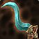
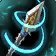
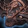
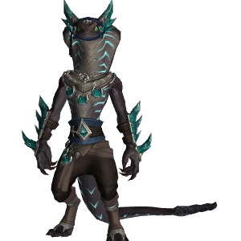

沙怒石拳战士
震地 91万每次
开佯攻每次震地前提前开，裸吃容易打残。
灵龟守护落地前半秒到一秒开，免掉马上取消，几乎不丢输出。
按你的专精看每个首领该按什么。伤害数字来自 15 场 +23/+24 限时记录，含吸收盾。
先选你的专精，页面会加上你这个专精每一步要按的技能。
小怪
一路物理伤害为主。最疼的是沙怒石拳战士的震地，和三叶虫的流血叠在一起。
打断免控钢条：打断不了，只能晕或者控住。免控：打断不了，这只怪也控不住。

蜿蜒打击44万每次游荡三叶虫没有要处理的技能。
第一个首领
两个首领一起打，大约 4 分 10 秒，全程自然伤害。跟着风暴祝福转火，先打死阿德里斯，最后约 40 秒收掉狂乱的阿斯匹克斯。
风暴祝福让一个首领免疫伤害，打另一个；它挨打时祝福会换到对方身上。
清阵风、免分摊、站着吃惊雷，都在这 8 秒里。
别等第一段落地再开，那时分摊已经打在你身上了。
别在首领战给自己交保护祝福首领全是自然伤害，保护挡不住，还会让你 30 秒内用不了圣疗术。
别在佯攻就绪时裸吃暴风或分摊实测死亡全发生在纯裸吃且佯攻没交，合波叠伤时更不能省。
别拿闪避硬顶二段惊雷闪避对法术只靠天赋减伤 20%，斗篷在冷却时必须老实跑出 20 码。
别指望灵龟清阵风灵龟不清也不免已挂身的阵风，开着还打不了，留给极端叠伤或小怪。
别在单吃时交掉优胜劣汰单层冷却 90 秒，单吃狂风之力、暴风都稳，要留给合波叠伤。
小怪
毒和流血多。最危险的是锯齿冲锋的流血和细胞毒素叠在一起。


倒刺三叶虫、流沙猎手、风暴能手：上一段见过，打法同老 1 之前。
第二个首领
单体，大约 4 分钟，除了蛇群和小怪平砍全是自然伤害。约 103 秒一轮：地面阶段连放雷霆喷吐和毒蛇风暴，然后钻地，进入约 50 秒的钻地阶段清小蛇。
两段交替。每段下面列出这段要处理的技能。
别给自己交保护祝福首领的技能全是自然伤害，保护挡不住，还会让你 30 秒内用不了圣疗术。
小蛇孵出来时别抢在坦克前面打剧毒蝰蛇会转过来砍你。
别用暗影斗篷去顶钻地之震钻地之震会穿透斗篷照常掉血，斗篷留给毒蛇风暴、雷霆喷吐或雷池。
小蛇孵化时别抢在坦克前面打避免抢仇恨吃平砍，钻地阶段专心躲钻地路径并锁死毒素喷吐。
别指望灵龟挡毒蛇风暴提前开也吃首跳，中途开清不掉持续伤害，开着还不能打。
别裸吃雷霆喷吐两层优胜劣汰都在却裸吃，最危一次从 89% 掉到 3%。
小怪
几乎全是自然伤害。暴怒云气的释放电荷是全本小怪里最常把人打残的技能。
火花引导者没有要处理的技能。
第三个首领
单体木桩战，大约 3 分 40 秒，全程自然伤害。每 23 秒一轮：先有人站进闪电线里挡充能，然后全团吃一次诱导。
三段从左往右循环。上面是机制，虚线下面是你要按的。
圣盾术期间照样能挡线，而且一点伤害都不吃。
牺牲比圣盾晚挂多少，斜线这段就长多少。实战里只慢了 0.8 秒，尾巴撞上诱导吃了 20 万。
别给自己交保护祝福这场全是自然伤害，保护挡不住，还会让你 30 秒内用不了圣疗术。
两个救命技能都要用，先圣疗再圣盾先开圣盾的话，圣疗术会被锁住。
别裸吃诱导诱导约 23 秒一轮，佯攻每轮都够用，纯裸吃会被直接打残甚至秒杀。
别指望佯攻加闪避单人吃满整根镀流闪避对镀流仅减伤 20%，单人硬吃多跳会被打穿，血过半必须换人或交斗篷。
诱导后别原地站电水每秒一跳约 57 万，站满 1 秒就是全本唯一一次被补死。
没开灵龟别站两根线的交点同时吃两根线，一下掉 25% 以上的血。
小怪
清掉两波宝珠守望者后开门，过走廊。最疼的是宝珠守望者的蚀骨践踏，10 秒持续掉血，驱散不掉。

无信援兵没有要处理的技能；无信折磨者的锁定见老 4。
第四个首领
大约 3 分 40 秒，打两轮。先杀堕落的守护者，再杀精华污染者解开禁疗；打断扭曲的妖术师，转阶段控住无信折磨者，把化身奶起来。
上面是机制，虚线下面是你要按的。
圣盾里腐化 0 伤害，牺牲转过来的伤害也是 0。
没开圣盾、自己又背着腐化时，别给人挂牺牲。转过来的伤害会把你打到 20% 以下。
别给自己交保护祝福腐化、邪恶冲锋、不稳定腐化都是暗影伤害，保护挡不住，还会让你 30 秒内用不了圣疗术。
别多领腐化叠到 2–3 层腐化就会死，只领自己那 1 层。
中了邪恶冲锋别只交一发佯攻就不管持续 8 秒会漏最后 2 秒尾跳，实测唯一死亡就是没续牌被尾跳跳死。
别以为暗影斗篷能清掉腐化斗篷只能免 5 秒伤害，清不掉 15 秒腐化，斗篷结束必须接上佯攻。
别连按两层优胜劣汰隔 1.5 秒连按只会刷新，不会叠成 16 秒，等第一层快完再交。
别多领腐化非坦克叠到两三层的全死了，只领一层。
天赋
英雄天赋：烈日先驱。高分记录里最常见的一套，导入就能用。下面几个天赋这本用得上，别换掉。
天赋
英雄天赋：欺诈者。高分记录里最常见的一套，导入就能用。下面几个天赋这本用得上，别换掉。
天赋
英雄天赋：群兽领袖。高分记录里最常见的一套，导入就能用。下面几个天赋这本用得上，别换掉。
数据来自 15 场 +23/+24 限时记录。